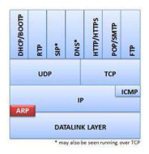
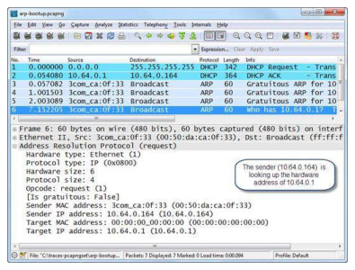
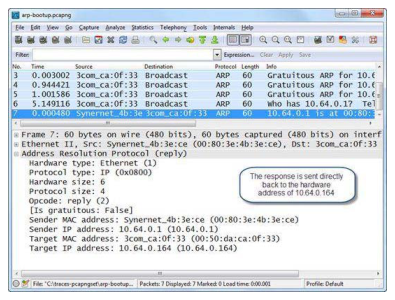

Wireshark Network Analysis 2nd Ed · Laura Chappell
ARP is the glue between IP and Ethernet — and a common attack vector.
Understand the ARP cache, normal operations, Gratuitous ARP, ARP problems, and cache poisoning attacks.
No questions yet.
No notes yet.
💡THINK FIRST · PURPOSE OF ARP
ARP resolves an IP address to a MAC address on the local network. Why is this necessary, and what happens when a host wants to communicate with a machine on a different subnet?
HINT
Ethernet frames need a destination MAC address. IP packets need a destination IP. These are different addressing systems. How do they connect?
MODEL ANSWER
Ethernet uses 48-bit MAC addresses for frame delivery; IP uses 32-bit (or 128-bit) addresses for routing. ARP bridges this gap on the local segment: a host sends an ARP Request broadcast ('Who has 192.168.1.10?') and the target replies with its MAC. For different-subnet communication, the host ARPs for the default gateway's MAC (not the remote host's MAC) — the router forwards the IP packet across the routed boundary.
The Purpose of ARP
ARP (Address Resolution Protocol, RFC 826) maps Layer 3 IP addresses to Layer 2 MAC addresses on the same local network segment. Operating at the boundary between Layer 2 and Layer 3, ARP is essential for Ethernet-based communication.
ARP Cache
Each host maintains an ARP cache — a table of IP-to-MAC mappings learned from ARP exchanges. Cache entries expire (typically 2-20 minutes depending on OS). When a host needs to send to a known IP but the cache has expired or the IP is new, it sends an ARP Request.
View the ARP cache: arp -a (Windows/Linux/Mac)
LAYER 2 SCOPEARP only works within a single network segment (broadcast domain). A router does not forward ARP packets — each subnet has its own ARP domain. When communicating across subnets, hosts ARP for the router's MAC address, not the remote host's.
🧠
MENTAL NOTE
ARP = IP-to-MAC resolution at Layer 2. Cache entries expire (typically 2-20 min). Only works within a broadcast domain — routers don't forward ARP. Cross-subnet communication: host ARPs for the gateway MAC, not the remote host. 'arp -a' shows current ARP cache on any OS.

📷Figure 193 — open trace file to view
Figure 193. ARP offers address resolution between MAC and IP address layers Analyze Normal ARP Requests/Responses Normal ARP communications consist of a simple request and a simple response. A host se

📷Figure 194 — open trace file to view
Figure 194. Standard ARP request
📷Figure 197 — open trace file to view
Figure 197. An ARP problem caused by a misconfigured host subnet value
Ask a Question
Add a Note
💡THINK FIRST · NORMAL ARP OPERATIONS
Describe the ARP request/reply exchange. What makes a Gratuitous ARP different from a normal ARP request?
HINT
In a normal ARP, who sends the request, what is the broadcast target, and what does the reply contain?
MODEL ANSWER
Normal ARP: Host A sends a broadcast (dst MAC = ff:ff:ff:ff:ff:ff) ARP Request: 'Who has 192.168.1.5? Tell 192.168.1.1'. Host B (192.168.1.5) sends a unicast ARP Reply to Host A: '192.168.1.5 is at 00:11:22:33:44:55'. Host A updates its ARP cache. Gratuitous ARP: the sender IP and target IP are the SAME — the host announces its own IP/MAC mapping without anyone asking. Used to update other hosts' ARP caches after an IP change or failover.
Source: the target host (who received the request)
Ethernet destination: requesting host's MAC (unicast)
Sender IP: target's IP
Sender MAC: target's MAC (this is the answer)
Target IP: requesting host's IP
Target MAC: requesting host's MAC
Broadcast Scope
ARP Requests are broadcast — all hosts on the segment receive them and update their own ARP cache with the sender's IP-MAC pair (unsolicited cache update). Only the target host sends an ARP Reply.
🧠
MENTAL NOTE
ARP Request: broadcast, opcode=1, target MAC = 00:00:00:00:00:00. ARP Reply: unicast to requester, opcode=2, contains the answer MAC. All hosts on segment update their ARP cache from the sender's IP+MAC in every ARP packet (request OR reply). This passive cache update is exploited in ARP poisoning.
Ask a Question
Add a Note
Gratuitous ARP
A Gratuitous ARP is an ARP Request or Reply where the sender IP = target IP — the host announces its own IP/MAC mapping. This is not a response to any request.
Legitimate Uses
IP conflict detection — when a host boots and wants to verify its IP isn't already in use, it sends a Gratuitous ARP for its own IP. If another host replies, there's a conflict.
Cache updates — after an IP change, a failover, or a NIC replacement, a Gratuitous ARP tells all hosts on the segment to update their ARP caches with the new MAC for this IP.
Redundancy (HSRP/VRRP) — when a backup router takes over the active role, it sends a Gratuitous ARP so all hosts update their ARP cache with the new MAC for the virtual IP.
ARP Cache Poisoning (Attack)
An attacker sends Gratuitous ARPs claiming: 'The gateway IP (192.168.1.1) is at MY MAC (aa:bb:cc:dd:ee:ff)'. All hosts on the segment update their ARP caches. All traffic to the gateway now goes to the attacker instead — a man-in-the-middle position. The attacker forwards traffic to the real gateway (maintaining connectivity) while intercepting and potentially modifying the traffic.
ATTACK SIGNIn Wireshark: multiple Gratuitous ARPs in rapid succession with the same IP but a different MAC than the legitimate device — especially for the gateway IP — indicates ARP poisoning. Filter: arp.opcode == 1 and arp.src.proto_ipv4 == arp.dst.proto_ipv4 (src IP = dst IP = Gratuitous ARP).
🧠
MENTAL NOTE
Gratuitous ARP: sender IP = target IP (announces own mapping). Legitimate uses: IP conflict detection at boot, failover (HSRP/VRRP active/standby switch), NIC replacement. Attack use: ARP cache poisoning — send false Gratuitous ARPs mapping gateway IP to attacker MAC → man-in-the-middle position.

📷Figure 195 — open trace file to view
Figure 195. Standard ARP reply Analyze Gratuitous ARPs Gratuitous ARPs are primarily used to determine if another host on the network has the same IP address as the sender. All hos
📷Figure 196 — open trace file to view
Figure 196. Gratuitous ARP packet
Ask a Question
Add a Note
💡THINK FIRST · ARP PROBLEMS
What are three network problems that manifest as ARP anomalies in a Wireshark capture?
HINT
Think about what happens if two hosts have the same IP, if the subnet mask is wrong, or if there are too many ARP broadcasts.
MODEL ANSWER
(1) Duplicate IP: two hosts have the same IP → both reply to ARP requests, the second reply overwrites the first in ARP caches, causing intermittent connectivity failures. Wireshark flags this with 'ARP: Duplicate IP address detected' in Expert Information. (2) Wrong subnet mask: host thinks a remote IP is local, sends ARP request that goes unanswered (no host with that IP on the local segment) → connection fails. (3) ARP broadcast storm: a misconfigured or infected host sends thousands of ARP requests per second, flooding the segment and degrading all hosts' performance.
ARP Problems
Duplicate IP Addresses
When two hosts share the same IP address, ARP reveals the conflict:
Host A ARPs for IP X → both hosts respond
Wireshark Expert Information flags: 'ARP: Duplicate IP address detected for X'
Filter: arp.duplicate-address-detected
Symptom: intermittent connectivity loss as ARP cache flip-flops between the two MACs
Incorrect Subnet Mask
If a host's subnet mask is too small, it thinks remote hosts are local and ARPs for them. These ARP requests go unanswered (no host with that IP on the local segment). Symptom: client can't reach some hosts but the IP routing is correct.
ARP Broadcast Storms
A large volume of ARP requests (hundreds/second) can saturate the CPU of all hosts on the segment, since every host's network stack must process each broadcast. Causes: misconfigured host, malware, network loop. Identify: filter 'arp', look at IO Graphs for the ARP packet rate.
DUPLICATE IPThe most common ARP problem in enterprise networks is a duplicate IP. Server teams often statically assign IPs that overlap with DHCP ranges, or DHCP gives out an IP already manually configured. Wireshark immediately identifies this: look for 'ARP: Duplicate IP address detected' in Expert Information.
🧠
MENTAL NOTE
Three ARP problems: (1) Duplicate IP — Wireshark Expert flags it; flip-flopping ARP cache; (2) Wrong subnet mask — host ARPs for remote IPs on local segment (unanswered); (3) ARP storm — hundreds of ARP requests/second; check IO Graphs for ARP rate. Filter for duplicate IP: arp.duplicate-address-detected.
📷Figure 198 — open trace file to view
Figure 198. Wireshark can detect duplicate IP addresses
Ask a Question
Add a Note
Filtering ARP in Wireshark
Scenario
Filter
All ARP
arp
ARP Requests only
arp.opcode == 1
ARP Replies only
arp.opcode == 2
ARP from specific IP
arp.src.proto_ipv4 == 192.168.1.1
Gratuitous ARP
arp.src.proto_ipv4 == arp.dst.proto_ipv4
Duplicate IP detected
arp.duplicate-address-detected
ARP for specific target
arp.dst.proto_ipv4 == 10.1.1.1
🧠
MENTAL NOTE
ARP filters: arp (all), arp.opcode==1 (requests), arp.opcode==2 (replies), arp.src.proto_ipv4==arp.dst.proto_ipv4 (Gratuitous ARP: src=dst IP), arp.duplicate-address-detected (Wireshark auto-flags). Check IO Graphs with 'arp' filter to measure ARP rate for storm detection.
📷Figure 199 — open trace file to view
Figure 199. ARP duplicate IP address detection is on by default, but ARP storm detection is not
Ask a Question
Add a Note
TL;DR — CHAPTER 16
ARP maps IP addresses to MAC addresses on the local segment. Normal: broadcast Request (opcode 1) → unicast Reply (opcode 2). Gratuitous ARP (sender IP = target IP) announces own mapping — used for conflict detection, failover, and (maliciously) for ARP cache poisoning. Problems: duplicate IP (Wireshark Expert flags it), wrong subnet mask (unanswered ARP requests), ARP storm (high ARP rate). Key filters: arp, arp.opcode==1/2, arp.duplicate-address-detected.
Review Questions
Q16.1
What is the key difference between an ARP Request and a Gratuitous ARP in terms of the sender and target IP fields?
HINT
Think about what makes a Gratuitous ARP unique in structure.
ANSWER
In a normal ARP Request: sender IP = requesting host's IP, target IP = the IP whose MAC is needed (different from sender). In a Gratuitous ARP: sender IP = target IP = the host's own IP. The host is announcing its own IP-MAC mapping without anyone asking for it. This structure is how Wireshark (and other tools) identify Gratuitous ARPs. Filter: arp.src.proto_ipv4 == arp.dst.proto_ipv4.
Q16.2
How does ARP cache poisoning work, and what Wireshark pattern indicates an attack?
HINT
What is the attacker's goal and what does the packet sequence look like?
ANSWER
The attacker sends repeated Gratuitous ARPs claiming that a legitimate IP (typically the gateway) is at the attacker's MAC address. All hosts on the segment receive these broadcasts and update their ARP caches. Traffic intended for the gateway is now sent to the attacker — a man-in-the-middle position. Wireshark pattern: rapid Gratuitous ARPs (many per second) for the gateway IP showing a different MAC than the gateway's real MAC. Also look for 'ARP: Duplicate IP address detected' in Expert Information.
Q16.3
A host complains of intermittent connectivity. Wireshark shows 'ARP: Duplicate IP address detected'. What is the most likely cause and remediation?
HINT
What creates a duplicate IP on a network?
ANSWER
Two hosts have the same IP address configured. Common causes: a static IP was assigned that falls within the DHCP pool (DHCP gave the same IP to another client), or two administrators manually configured the same IP on different hosts. Remediation: identify both MACs from the ARP capture (each ARP reply for the duplicate IP shows a different source MAC), find the corresponding devices, and change one to a unique IP. Preventively: use DHCP reservations instead of static IPs, or configure DHCP exclusion ranges for statically assigned addresses.
Q16.4
Why doesn't ARP work across routers, and what happens when a host sends an ARP request for an IP on a different subnet?
HINT
What does a router do with a broadcast packet?
ANSWER
Routers do not forward ARP packets — broadcast frames (dst MAC = FF:FF:FF:FF:FF:FF) are terminated at the router boundary. An ARP request for an IP on a different subnet is broadcast on the local segment, receives no reply (the remote host is not on this segment), and the originating host cannot build the ARP cache entry. The host should instead send traffic to its default gateway — it ARPs for the gateway's MAC and the router handles forwarding the IP packet to the remote subnet.
Q16.5
What legitimate network function commonly triggers a Gratuitous ARP, and how does this manifest in a Wireshark capture?
HINT
Think about high-availability and redundancy protocols.
ANSWER
HSRP (Hot Standby Router Protocol) and VRRP (Virtual Router Redundancy Protocol) use Gratuitous ARPs during failover. When the active router fails and the standby takes over, the new active router sends a Gratuitous ARP: 'the virtual gateway IP (e.g. 192.168.1.254) is now at MY MAC'. This updates all hosts' ARP caches so they send gateway-bound traffic to the new active router instead of the failed one. In Wireshark: a Gratuitous ARP appears immediately after the HSRP state change messages, with the virtual IP as both sender and target IP, and the new active router's real MAC as the sender MAC.